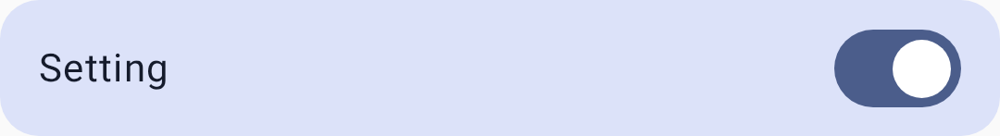
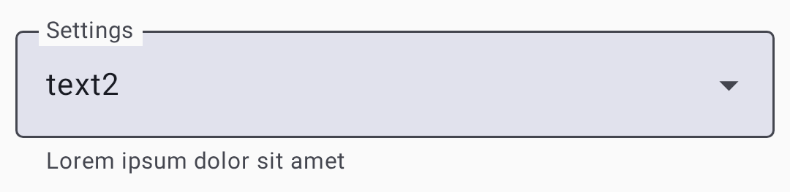
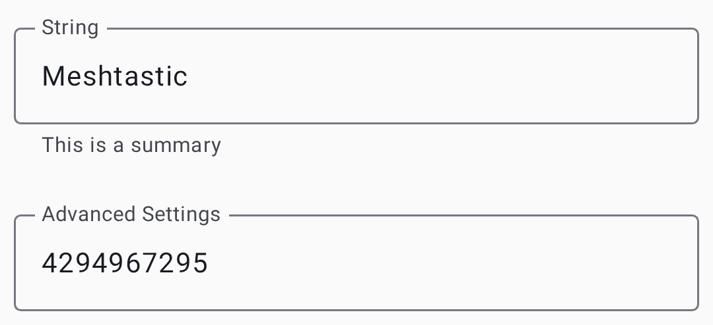
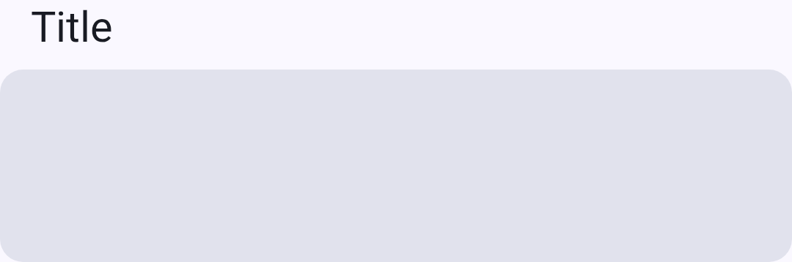

Settings — Modules & Admin
Configure optional feature modules and perform device administration. Modules extend Meshtastic with specialized capabilities — each can be independently enabled or disabled.
Enable only the modules you use. Disabling unused modules reduces airtime, saves battery, and simplifies your configuration. A module you expect can be missing for three reasons: your node’s role doesn’t enable it, your firmware is older than the release that added it, or the firmware build excludes it for this hardware.
Module settings use a card-based layout with toggle switches, dropdowns, text fields, and sliders:




모듈 설정
Every module lives under Settings → Module configuration.
Saving a module screen restarts the node: the button reads Save & restart, and the node is unreachable for a few seconds afterwards. External Notification and Mesh Beacon are the exceptions: their button reads Save. External Notification may still restart the node for some changes, while a Mesh Beacon change applies without a restart.
MQTT module
Bridges mesh messages to and from an MQTT broker for internet connectivity. This is how you extend your mesh beyond LoRa range or integrate with home automation systems.
| Setting | 설명 | Default |
|---|---|---|
| 서버 주소 | MQTT broker address | mqtt.meshtastic.org |
| Encryption Enabled | Publish packets still encrypted with the channel key | On |
| JSON 사용 | Publish and consume MQTT messages as JSON. Shown only for a node on firmware older than 2.8, which removed JSON support, or while the setting is still on | Off |
| Map Reporting | Publish position to the public map — see the map reporting card that follows | Off |
| MQTT Client Proxy | Let the connected app carry the node’s MQTT traffic, instead of the node reaching the broker itself | Off |
| MQTT Enabled | Turn the MQTT bridge on | Off |
| MQTT proxy in this app | The app-side half of MQTT Client Proxy: whether this app acts as that relay. It shows whether the relay is running, and can be turned on only while MQTT Enabled and MQTT Client Proxy are both on. See MQTT | — |
| 비밀번호 | Authentication password | The public broker’s |
| Root Topic | Base MQTT topic path | msh |
| TLS Enabled | Use a secure connection | Off |
| 사용자명 | Authentication username | The public broker’s |
Turning Map Reporting on reveals a consent card headed Consent to Share Unencrypted Node Data via MQTT, with an I agree. switch under it. The rest of the card doesn’t exist on screen until you agree:
| Setting | 설명 |
|---|---|
| 동의합니다. | Explicit consent to transmit your node data, including an approximate position, unencrypted. Map reporting doesn’t start without it |
| Map Publish Interval | How often to report. A dropdown of fixed intervals from 1 hour to 72 hours — nothing shorter is offered |
| Precision slider | The slider has no label of its own. It sets how coarsely your position is published, from 12 to 15; the line beneath reads ± the resulting distance, in your own units |
See MQTT for a detailed usage guide including encryption, privacy, and broker setup.
Serial module
Enables serial port communication for external device integrations (GPS modules, sensors, or custom hardware). When enabled, the node’s serial port can send and receive protobuf or text data, allowing external microcontrollers or computers to interact with the mesh.
| Setting | 설명 | Default |
|---|---|---|
| Baud | Port speed, from 110 Baud to 921600 Baud | Default |
| Echo | Echo packets you send back over the serial port | Off |
| Mode | Which protocol the port speaks: Default, Simple, Protobufs, Text Message, NMEA Positions, or CalTopo, plus WS85, VE_DIRECT, MS_CONFIG, LOG and LOGTEXT under their firmware names | Default |
| Override console serial port | Take over the port the debug console normally uses | Off |
| Receive data (rxd) GPIO pin / Transmit data (txd) GPIO pin | GPIO pins for the serial connection | 0 |
| Serial Enabled | Turn serial communication on | Off |
| 시간 초과 | How long to wait before treating received data as a complete packet. 0 uses 250 ms | 0 |
External Notification module
Controls buzzer, LED, or vibration alerts on your node hardware. Useful for devices that need to physically signal when a message arrives — particularly helpful for unattended or outdoor installations.
There are two independent triggers — an incoming message, and a received bell character — and each can drive the LED, the buzzer and the vibration motor separately, giving six toggles. The firmware turns the module on, and picks the outputs, on hardware that has a buzzer, vibration motor or notification LED; elsewhere everything starts off.
| Setting | 설명 |
|---|---|
| Active | Whether the LED pin is active high or low. Shown once Output pin GPIO is set |
| Alert when receiving a bell / Alert GPIO buzzer when receiving a bell / Alert GPIO vibra motor when receiving a bell | Which outputs fire on a received bell character |
| Alert when receiving a message / Alert GPIO buzzer when receiving a message / Vibra Motor Alert | Which outputs fire on an incoming message |
| External Notification Enabled | Master toggle for the module |
| GPIO Output Duration | How long a single alert lasts |
| Nag Timeout | Keep repeating the alert for this long until it is acknowledged. Unset disables nagging |
| Output pin GPIO | Pin the LED is wired to |
| Output pin buzzer GPIO | Pin the buzzer is wired to |
| Output pin vibra GPIO | Pin the vibration motor is wired to |
| 벨소리 | The tone played on a PWM buzzer, in RTTTL. Can be imported from a file |
| Use I2S As Buzzer | Send the alert through an I2S audio output instead |
| Use PWM Buzzer | Drive the buzzer with PWM, which allows tones rather than a single pitch. Shown once Output pin buzzer GPIO is set |
Store & Forward module
Buffers messages for nodes that were temporarily offline, then replays them when those nodes reconnect. Essential for meshes where nodes go in and out of range regularly — ensures messages aren’t lost during brief disconnections. A server needs an ESP32 with PSRAM or a Linux meshtasticd node. A node in the Router or Router Late role acts as a server even with the server setting off.
| Setting | 설명 | Default |
|---|---|---|
| History Return Max | Most stored messages returned per request. 0 uses 25 | 0 |
| History Return Window | How far back, in minutes, stored messages are returned. 0 uses 240 | 0 |
| Number of records | Most messages to store. 0 uses three quarters of the free PSRAM | 0 |
| Send Heartbeat | Periodically announce that this node is a store-and-forward server | Off |
| 서버 | Act as a store-and-forward server for the mesh | Off |
| Store and Forward Enabled | Turn store and forward on | Off |
Range Test module
Automated range testing tool for evaluating link quality between nodes. When enabled, the node periodically transmits test messages with incrementing counters. A receiver node logs these messages, allowing you to walk or drive away and later analyze at what distance messages stopped arriving.
Range Test only works on a secured primary channel. As long as your primary channel still uses the default channel key, the interval and CSV controls stay disabled — you can still switch an already-enabled module off — and saving force-disables the module if the channel has reverted to public.
| Setting | 설명 | Default |
|---|---|---|
| Range Test Enabled | Turn range testing on | Off |
| Save | Log received test data as a CSV on the node’s own filesystem. ESP32 nodes only | Off |
| Sender Interval | Time between test transmissions, chosen from a dropdown of fixed intervals. Unset stops sending | Unset |
Telemetry module
Controls what telemetry data your node shares with the mesh. Telemetry includes device health (battery, uptime) and environmental sensor data (temperature, humidity, pressure).
Each of the four metric groups has its own enable toggle and its own interval, so you can report battery health often and sensors rarely. The intervals run from 30 minutes to 72 hours.
| Setting | 설명 | Default |
|---|---|---|
| Air Quality Metrics Enabled | Report particulate and CO₂ sensor data | Off |
| Air Quality Metrics Interval | How often to report them | — |
| Broadcast Device Metrics | Send device metrics to the mesh. When it is off, they go only to connected clients. Only shown on firmware 2.7.13 and newer | Off |
| Device Metrics Interval | How often to report battery, uptime and channel utilization | — |
| Display Fahrenheit | Use °F on the device’s display. This is the node’s screen only — the app follows your phone’s locale, see Units & Locale | Off |
| Environment Metrics Enabled | Report the attached environment sensors | Off |
| Environment Metrics Interval | How often to report them | — |
| Power Measurement Enabled | Report the per-channel voltage and current readings | Off |
| Power Metrics Interval | How often to report them | — |
| Power Screen | Also show power readings on the device’s display | Off |
| Show on device screen | Also show environment readings on the device’s display | Off |
See Telemetry & Sensors for supported sensors and configuration recommendations.
Canned Message module
Pre-configured messages accessible from the node’s physical buttons (for nodes with rotary encoders, keypads, or similar input hardware). Define a list of quick-send messages that can be transmitted without a phone connected — ideal for field use.
| Setting | 설명 | Default |
|---|---|---|
| Clockwise Rotary Event / Counterclockwise Rotary Event / Encoder Press Event | Which key event each encoder action produces: None, Up, Down, Left, Right, Select, Back, or Cancel | None |
| 메시지기기 | Newline-separated list of messages | Empty |
| Pin A / Pin B / Press Pin | The three pins the rotary encoder is wired to | 0 |
| Rotary Encoder | Use a rotary encoder as the input device | Off |
| Send Bell | Send a bell character alongside the message, so a receiving node’s External Notification module can sound | Off |
| Up/Down/Select Input | A separate, simpler input scheme using up/down/select buttons rather than an encoder | Off |
Some boards with built-in encoders or keys come with the input settings filled in. Two older fields, Canned message enabled and Allow input source, appear only for a node on firmware older than 2.7, or while they still hold a value.
Audio module
Codec2 audio support for low-bandwidth voice communication over the mesh. This is an experimental feature that encodes voice into very small data packets using the Codec2 codec. It needs specific hardware, an I2S microphone and speaker, and the voice quality is low.
| Setting | 설명 | Default |
|---|---|---|
| Bitrate | Codec2 bitrate, from 450 bps to 3200 bps. Lower rates use less bandwidth and give poorer audio | Default |
| Codec2 Enabled | Turn the audio module on | Off |
| I2S Clock Pin | GPIO pin for the I2S bit clock | 0 |
| I2S Data In Pin | GPIO pin for I2S data in | 0 |
| I2S Data Out Pin | GPIO pin for I2S data out | 0 |
| I2S Word Select Pin | GPIO pin for I2S word select | 0 |
| PTT Pin | GPIO pin for the push-to-talk button. 0 uses GPIO 39 | 0 |
Remote Hardware module
GPIO control over the mesh network. Allows a remote node to read or write GPIO pins on another node — useful for activating relays, reading switches, or controlling external hardware from a distance.
⚠️ Warning: Turning on Allow undefined pin access gives remote nodes access to all GPIO pins, which could interfere with the node’s own hardware. Turn it on only on dedicated GPIO nodes.
| Setting | 설명 | Default |
|---|---|---|
| Allow undefined pin access | Allow access to any GPIO pin (security risk) | Off |
| Available pins | Up to 4 GPIO pins this node exposes for remote read/write | None |
| 원격 하드웨어 활성화 | Turn remote GPIO access on | Off |
Neighbor Info module
Broadcasts information about directly heard neighbors, enabling mesh topology mapping. Each enabled node periodically shares a list of the other nodes it can hear and their signal quality.
| Setting | 설명 | Default |
|---|---|---|
| Neighbor Info Enabled | Turn neighbor broadcasting on | Off |
| LoRa로 전송 | Also broadcast neighbor info over LoRa, not just MQTT and the connected app. Unavailable on a channel using the default key and name | Off |
| Update Interval | How often to broadcast the neighbor list, in seconds. Minimum 4 hours | 0 (firmware default) |
See Local Mesh Discovery for how to use neighbor data for mesh topology exploration.
Ambient Lighting module
Controls onboard NeoPixel or other addressable RGB LEDs on supported hardware. Can be used for visual status indicators, notification lights, or decorative effects.
Pick the color with the swatch’s Preset colors row or the Red, Green and Blue sliders. Advanced opens number fields for the same three values.
| Setting | 설명 | Default |
|---|---|---|
| 전류 | LED drive current, 0 to 31 | 10 |
| LED State | Turn the LED on or off | Off |
| Red / Green / Blue | Individual color channel values, 0 to 255 | Derived from the node number |
Detection Sensor module
Turns your node into a motion or door sensor alert system. When a GPIO pin detects a state change (motion detected, door opened), the node broadcasts an alert message over the mesh.
| Setting | 설명 | Default |
|---|---|---|
| Detection Sensor Enabled | Turn the detection sensor on. It also has to be on for nodes that receive its alerts or chart its log | Off |
| GPIO Pin to monitor | GPIO pin connected to the sensor. 0 disables the module | 0 |
| Minimum time between detection broadcasts | Minimum time between alert broadcasts | 0, which the firmware treats as 1 hour (12 hours on Router roles) |
| Name | Custom name for this sensor, used in its messages | Empty |
| Send Bell | Include a bell character in alerts | Off |
| State Broadcast Interval | How often to send the sensor’s state whether or not anything was detected. Unset sends only on detection | Unset |
| Trigger Type | How the pin’s state maps to a detection event: High, Low, Rising Edge, Falling Edge, Either Edge High, or Either Edge Low | High |
| Use Internal Pull-up | Enable the pin’s internal pull-up resistor | Off |
Paxcounter module
People counter using Wi-Fi and BLE probe requests. Counts nearby devices by passively listening for probe requests that phones and laptops emit when scanning for networks. Available only on ESP32 devices. Counts are approximate, since one person may carry several devices, so the module suits estimating foot traffic at trailheads or event venues.
| Setting | 설명 | Default |
|---|---|---|
| BLE Threshold (dBm) | The same cut-off for BLE advertisements | 0, which the firmware treats as −80 dBm |
| PAX Counter Enabled | Turn people counting on. Wi-Fi and Bluetooth must both be off on the node for it to work | Off |
| Update Interval | How often to report counts | — |
| WiFi Threshold (dBm) | Ignore Wi-Fi probes weaker than this, so distant devices aren’t counted | 0, which the firmware treats as −80 dBm |
Status Message module
The status message has no module screen. It is edited with the rest of the node’s identity, on Settings — Radio & User.
Mesh Beacon module
Broadcasts an invitation to your mesh, and receives invitations from others. The entry appears only on nodes running firmware 2.8.0 or newer. See Local Mesh Discovery for the full walkthrough.
TAK module
Team Awareness Kit integration for interoperability with ATAK and WinTAK. The entry is labeled TAK (ATAK). Two things have to be true before it appears in the module list: the node runs firmware 2.8.0 or newer, and its Device Role on Settings → Device configuration → Device is set to TAK or TAK Tracker. See TAK Integration for detailed setup and usage.
관리
원격 설정
Remote administration changes another node’s settings over the mesh. The target node must list your node’s public key as one of its Admin Key entries, set on its Settings → Security screen.
- Tap the target node in the node list to open its detail screen.
- In the Administration card, tap Remote Administration. The app first establishes a session with the node, showing Establishing remote session…, then opens its Settings.
- Modify configuration.
- Tap Save or Save & restart. The changes are sent over the mesh.
Device Actions
Settings → Administration holds one-shot actions, each behind a confirmation dialog:
| Action | What it does |
|---|---|
| Set time | Sends your phone’s clock to the node |
| 재부팅 | Restarts the node |
| Reboot into DFU mode | Restarts an nRF52 node into its bootloader, where it stays off the mesh until new firmware is flashed or it is reset. Shown only for nRF52 nodes |
| 종료 | Powers the node down |
| 공장초기화 | Returns every setting to its factory default |
| 노드 목록 리셋 | Clears the node database. This dialog carries a Preserve Favorites? switch |
⚠️ Warning: Factory reset erases all settings, channels, and keys, and cannot be undone. Before you reset, use Export configuration to save the node’s settings and Backup Keys on the Security screen to save its keys, so you can put both back afterwards.
백업 & 복구
Settings → Backup & Restore writes the connected node’s whole configuration to a file with Export configuration, and reads a saved file back in with Import configuration. Traffic Management settings are exported but not applied on import. Export before a factory reset, or to copy one node’s setup onto another. The section is shown for your own node only, not over remote admin.
The same section backs up the app’s own data for a node: its messages and nodes as stored in the app, not the node’s settings.
- Back up app data saves that data to a file named after the node and the date.
- Restore app data replaces the app’s messages and nodes for that node with a backup, after a confirmation. It accepts only an undamaged backup made by an app with the same database version. The restore takes effect after you restart the app and reconnect to that node.
Both disconnect the node first, after asking, and act on the data of the node that was connected. With no node connected they act on the most recently connected node. They stay disabled, with the line Connect to a radio first. There is no app data to back up or restore yet., until the app has stored data for some node.
고급
Settings → Advanced collects the tools that read or rewrite local state, and is likewise shown for your own node only: Firmware Update on OTA-capable hardware, Clean Node Database, TAK Server, Local Mesh Discovery, and the Debug Panel.
Clean Node Database
Prunes nodes from your node database — from the app’s copy and from the node’s own, so this is not a display-only cleanup. The two filters combine rather than acting separately; the screen puts it as Selections are additive.
- Clean up nodes last seen older than N days — always applied. The slider runs from 7 days to 365 and starts at 30; with Clean up only unknown nodes turned on, its floor drops to 0.
- Clean up only unknown nodes — narrows the same purge to nodes that never sent their user info. The age limit still applies on top of it.
The screen lists the nodes queued for deletion as you move the filters. Clean Now carries the purge out, after one more confirmation, and it can’t be undone. Favorited nodes, ignored nodes, and nodes with a public key heard in the last seven days are never removed, whatever the filters say — that is why the queued list can be shorter than you expect.
디버그 패널
Opens the Packets and App logs tabs for viewing, filtering, and exporting diagnostic output. See Debug Logs for the full walkthrough.
App Settings
The App section of the Settings screen configures the app rather than the node, and appears only when your own node is selected. It holds, in order:
- Allow analytics and crash reporting. — opt in or out of diagnostics. Google Play build only.
- Provide phone location to mesh — share this phone’s position when the node has no GPS fix. It needs precise location: with approximate location allowed, turning it on asks for precise.
- Compact encoding for Cyrillic — how look-alike characters in names are handled.
- Language, Theme, and Units. Units is metric, imperial, or follow the system, and is the entry Units & Locale sends you to.
- Show full message timestamps.
- Device DB cache limit, which sets how much history is kept.
- Export rangetest packets, Export all packets and Export node database.
- Node Layout — how much detail each row of the node list shows.
- Wi-Fi Provisioning for mPWRD-OS — see Connections.
- Message Filter — hides incoming messages that contain words you list. With no words configured it does nothing.
- System AI — appears only where app functions are available; see App Functions.
A Permissions section sits above App, so a user who skipped a permission during onboarding can get back to it. Information sits below it, with Show Introduction, App Notifications, System Settings, About, and the app version. Help & Documentation closes the screen.
앱에 대하여
Settings → About carries the app’s own identity rather than the node’s, in three sections:
- What is Meshtastic? — a short description of the project.
- Apps — opens with Need Hardware?, a rotating carousel of popular devices that links out to where to buy one. It also lists the GitHub repository, the running app version, and Acknowledgements (see the next section).
- Project information — links to the website, to this documentation, and to the GNU GPL v3 license the app is released under.
The footer states the copyright and that the app is free software with no warranty, which you may redistribute under the same license.
Acknowledgements
Reached from About, this lists every open-source library the app ships, with its license, generated at build time by AboutLibraries.
Troubleshooting remote admin
- “Could not reach node — try again or move closer.” The target may be out of range or offline, or it doesn’t list your node’s public key as an admin key. Check the Admin Key entries on the target node.
- “Connect to a radio to administer remote nodes.” Your own node isn’t connected. Reconnect it from the Connections screen.
- Changes not applying — some settings require a reboot to take effect. Try the Reboot action after saving.
Related Topics
- Settings — Radio & User — core node and user profile settings
- Module configuration reference — detailed module docs on meshtastic.org
- FAQ — common questions on meshtastic.org